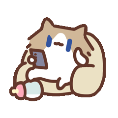

working
thinking
talking
Codex 原生 pet 没有 talking 行，归入 review/thinking 行。
juggling
Codex 原生 pet 没有 juggling 行，归入 running/working 行。
sweeping
Codex 原生 pet 没有 sweeping 行，归入 running/working 行。
waiting
needsinput
Codex 原生 pet 没有独立 needsinput 行，归入 waiting 行。
attention
Codex 原生 pet 没有 attention 行，归入 waving/jumping。
happy
greet
error

loafing
Codex 原生 pet 没有 loafing 行，只能保留在完整状态表或近似填入 look 行。

idle
roam
Codex 原生 pet 用 running-left/right 表示拖动移动，闲逛语义只能近似映射。
sleeping
Codex 原生 pet 没有 sleeping 行，只能保留在完整状态表或近似填入 look 行。